Samples 25–36 of 43
-
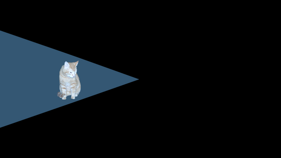
Aiming
Turn a spotlight smoothly toward a cat controlled with the keyboard, gamepad or mouse.
-
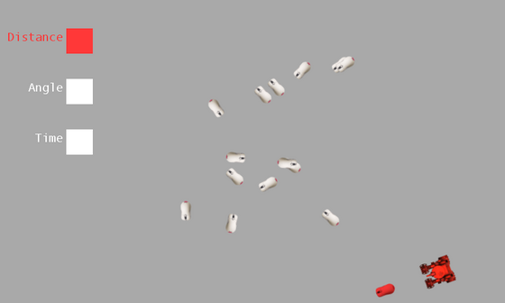
Fuzzy Logic
Adjust distance, angle and pursuit-time weights to change which mouse a tank decides to chase.
-
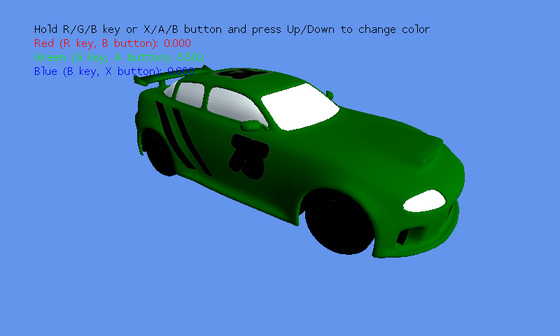
Color Replacement
Repaint a spinning car with its original compiled shader while preserving the windows and lights.
-
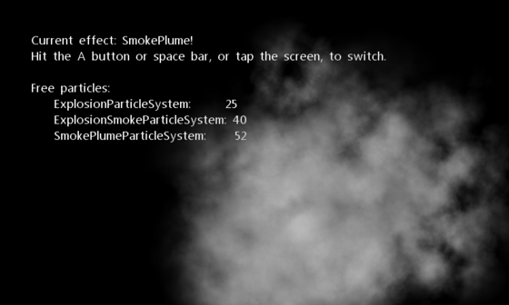
Particle Sample
Switch between additive explosions with lingering smoke and a wind-blown smoke plume.
-
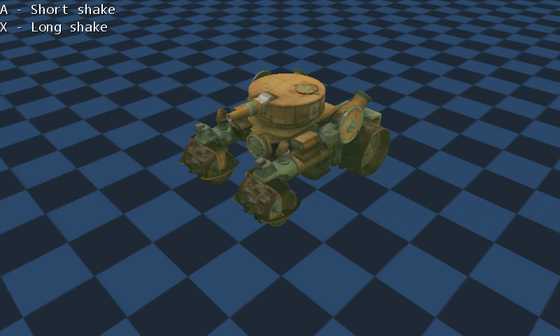
Camera Shake
Shake a 3D scene's camera briefly or for two seconds, then watch it settle back.
-
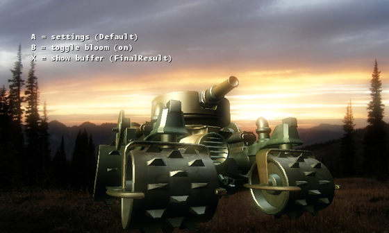
Bloom Postprocess
Extract bright areas, blur them in two passes, and combine the glow with a 3D scene.
-
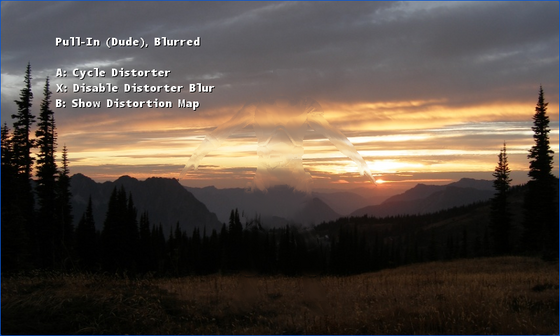
Distortion
Try an invisibility cloak, heat haze and privacy glass using a screen-space distortion map.
-
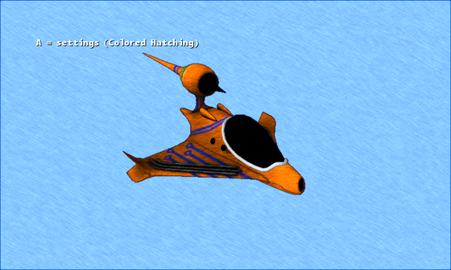
Non-Photorealistic
Turn a spinning ship into a cartoon, pencil sketch or colored hatch drawing.
-
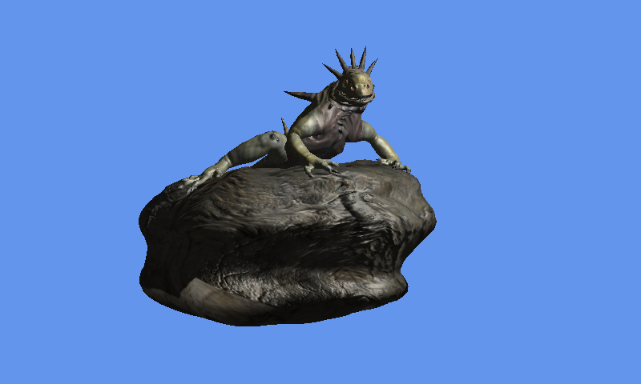
Normal Mapping
Move around a normal-mapped lizard and rock as a light reveals their surface detail.
-
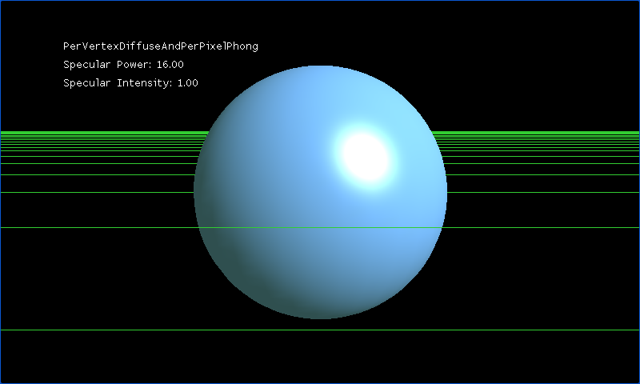
Per-Pixel Lighting
Compare five lighting techniques on spheres and low-poly meshes while adjusting the highlights.
-
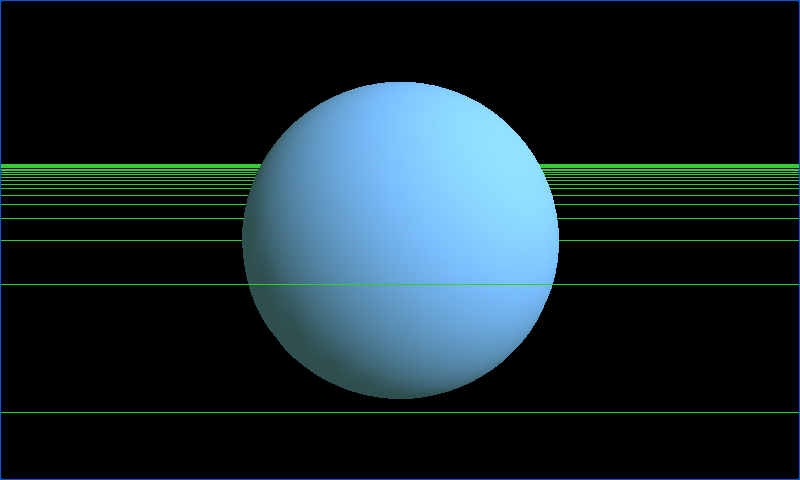
Vertex Lighting
Compare flat white shading with directional light calculated across five different meshes.
-
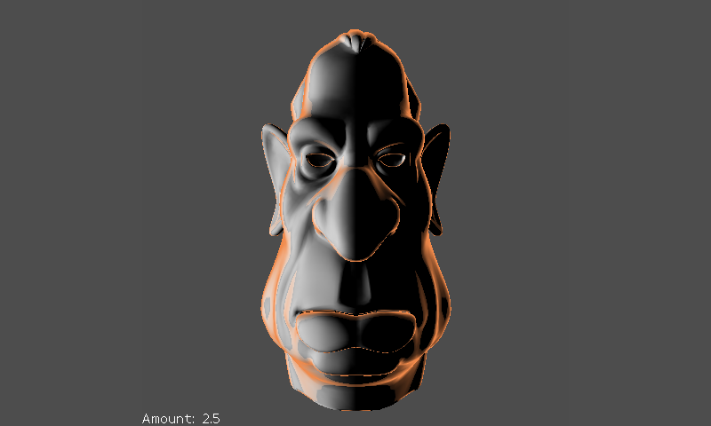
Rim Lighting
Adjust the glowing rim around a 3D head and switch between rotating the model and camera.